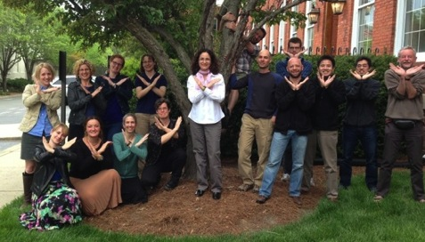

The Tree of Sex Consortium is a NESCent funded working group to assemble the Tree of Sex database.

Doris Bachtrog, University of California Berkeley, is an evolutionary biologist interested in the evolutionary and molecular mechanisms driving sex chromosome differentiation in flies, birds and snakes. She helped with the assembly of the invertebrate database.
Katie Peichel, Fred Hutchinson Cancer Research Center, is an evolutionary biologist studying the molecular mechanisms and evolutionary forces driving the rapid turnover of sex chromosomes in stickleback fish. She coordinated the assembly of the vertebrate database.
Judith Mank, University College London, is an evolutionary biologist studying how sex-specific selection and sexual conflict affect genome evolution. She helped with the assembly of the vertebrate database.
Nicole Valenzuela, Iowa State University, is an evolutionary biologists interested in the evolution of sex determination, sex chromosomes, and genome organization/function in reptiles and other vertebrates. She helped with the assembly of the vertebrate dataset.
Heath Blackmon, Texas A&M University, is an evolutionary biologist interested in the mode and tempo of chromosome number and sex chromosomes evolution. He helped with the assembly of the invertebrate database, and maintains these pages and curates data for the vertebrates and invertebrates.
Jana Vamosi, University of Calgary, is an evolutionary ecologist interested in the causes and consequences of plant biodiversity. She helped with the assembly of the plant database and phylogenetic analysis.
Sarah (Sally) Otto, University of British Columbia, uses theoretical models, as well as comparative analyses and experimental tests, to explore the evolution of sexual systems and genomic architecture. She helped build the plant database.
Itay Mayrose, Tel-Aviv University, is a plant evolutionary biologist interested in whole genome duplications, plant mating systems evolution, and in the development of phylogenetic methodologies. He helped with the assembly of the plant database.
Matthew Hahn, Indiana University, is interested in the evolution of genes and genomes, especially the differentiation of insect sex chromosomes. He helped with the assembly of the insect database.
Tia-Lynn Ashman, University of Pittsburgh, is an evolutionary ecologist interested in the evolution of sexual systems and sex chromosomes in flowering plants. She helped with the assembly of the angiosperm database.
Emma Goldberg, University of Minnesota, is a theorist interested in macroevolution, plant mating systems, and biogeography. She helped with the assembly and analysis of the plant database.
Matt Pennell, University of Idaho, is an evolutionary biologist interested in understanding sex chromosome evolution from a phylogenetic perspective. He is helping with analyses on a variety of projects.
Jun Kitano, National Institute of Genetics, Japan, is an evolutionary biologist interested in the genetic mechanisms of speciation and the evolution of sexual dimorphism in fishes. He helped with the assembly of the vertebrate database.
Nicolas Perrin, Lausanne University, is interested in the evolution of sex determination and sex chromosomes, using amphibians as model organisms. He helped in the assembly of the vertebrate database.
Laura Ross, University of Edinburgh, is an evolutionary biologist interested in the evolution of unusual reproductive systems across invertebrates. She helped with the assembly of the invertebrate database.
Mark Kirkpatrick, University of Texas Austin, is a theoretical evolutionary biologist interested in the population forces driving the transition of sex determination systems.